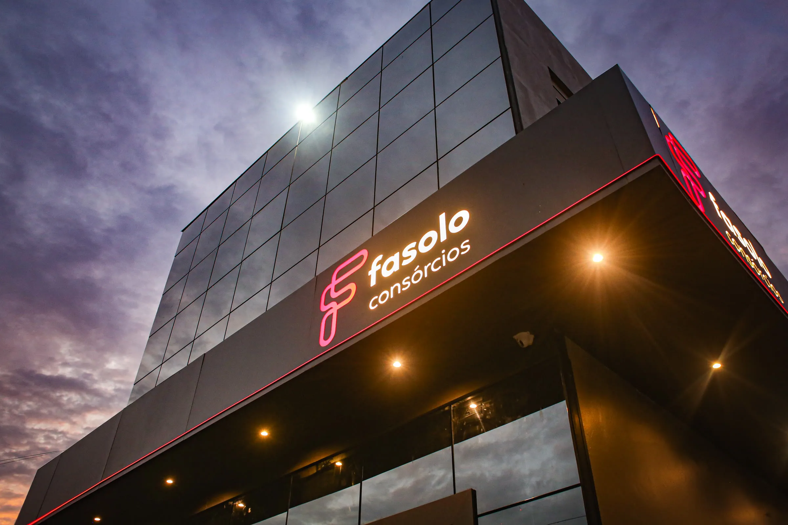
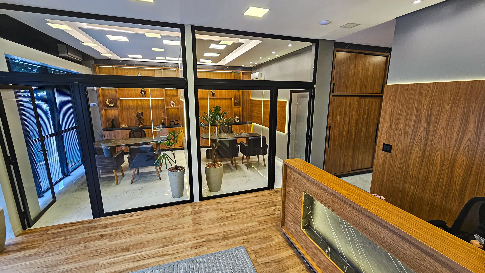
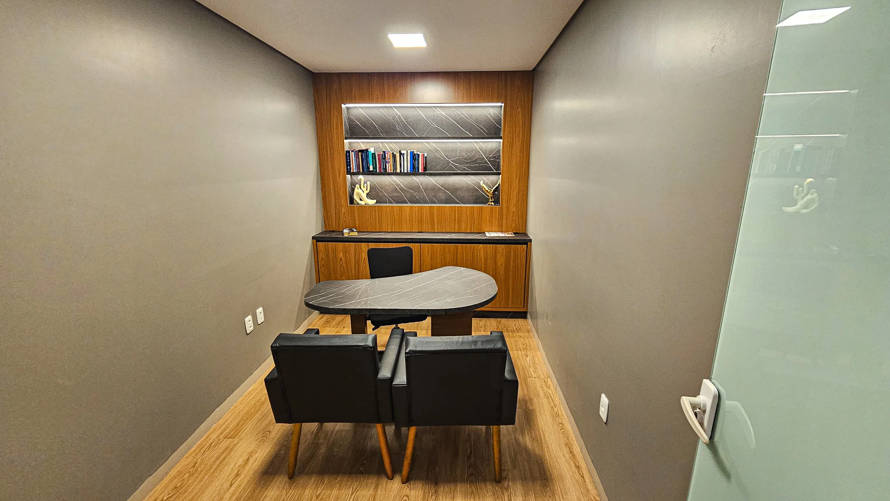
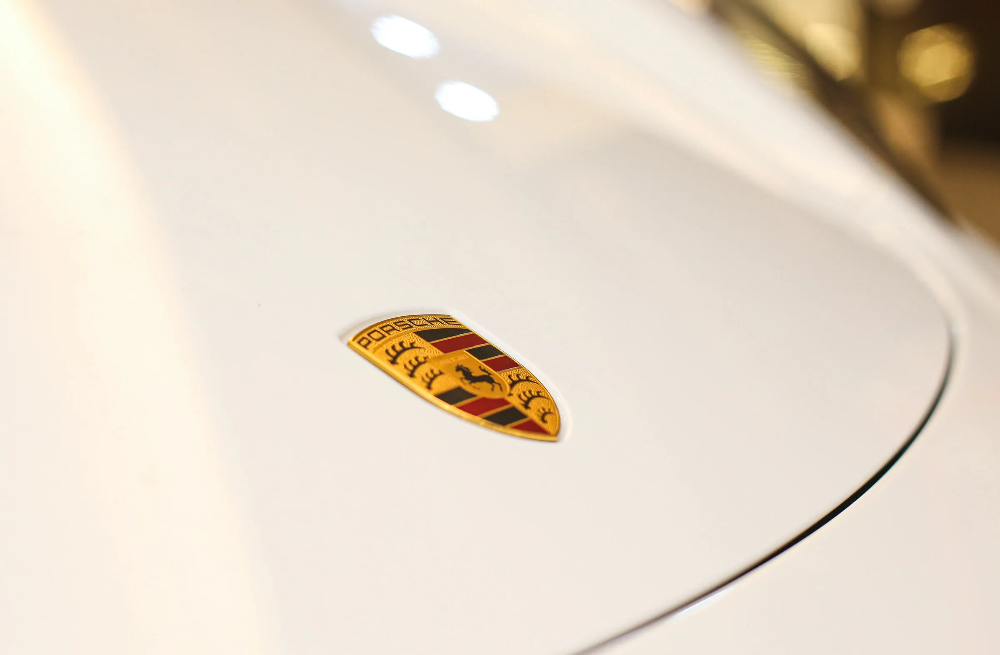
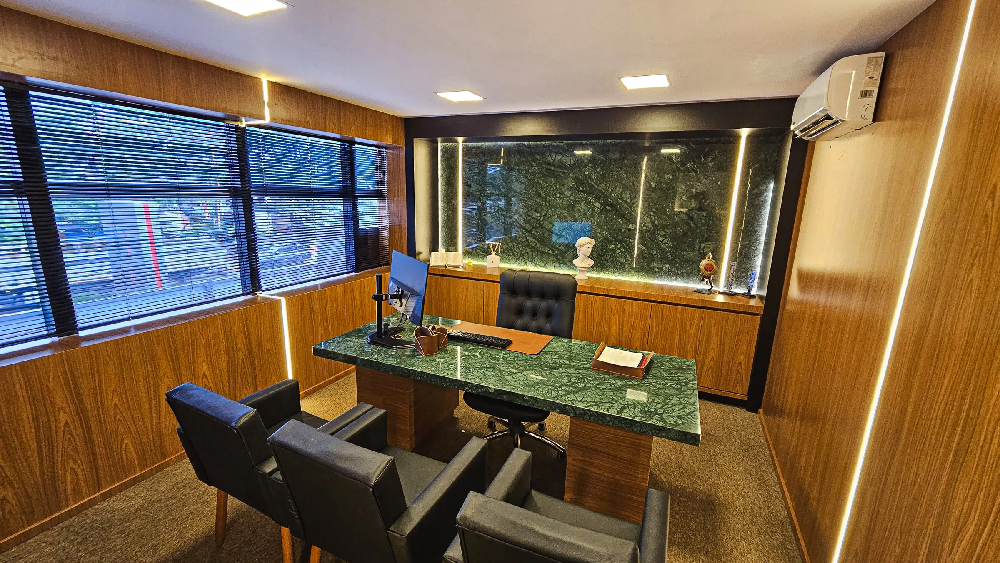
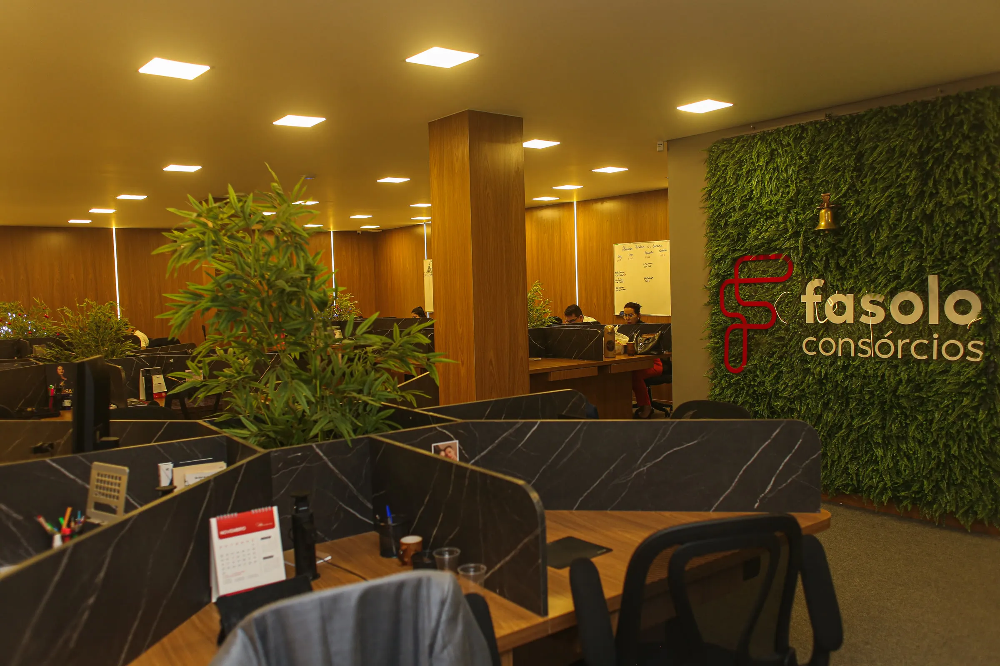

Corretora autorizada · HS Consórcios
O que decide sua contemplação não é a parcela — é a configuração do grupo. Há 12 anos colocamos cada cliente no grupo certo, com aceleradores de contemplação a partir do 1º mês.
Grátis, sem compromisso e sem taxa de adesão.
Jair Fasolo também comprava olhando parcela e taxa. Até descobrir o que mudou seu jogo, e criar a Fasolo.
Hoje aplicamos com os clientes as mesmas estratégias usadas no patrimônio dele: estudo de grupos, análise contábil, histórico e modalidades de contemplação.
Aqui você não compra uma cota. Compra estratégia.
No consórcio comum, quase tudo depende de sorteio ou lance alto. Nos grupos da HS onde alocamos nossos clientes, você participa de 6 modalidades simultâneas:
Aceleradores a partir do 1º, 6º, 12º e 18º mês. Somado a: menor lance embutido do país · Meia Parcela Meia Taxa · sem taxa de adesão · lance com imóvel usado, veículo usado, FGTS, embutido ou dinheiro.

exemplo ilustrativo
São mais de 6.000 clientes ativos e R$ 1,2 bilhão em bens entregues. Veja quem já saiu da fila do “um dia” e realizou com estratégia.

01 Consórcio Imobiliário Casa, comercial, rural, terreno, construção e reforma. Conhecer os planos imobiliários
02 Consórcio de Veículos Leves, pesados, motos, náuticos, agro e linha amarela. Conhecer os planos de veículos
03 Consórcio Investimento Alavancagem, renda imobiliária e capital para o seu negócio. Conhecer o consórcio como investimento
Preencha o formulário e receba sua simulação no WhatsApp.
Corretora autorizada, código 2575/2438. Grupos administrados pela HS Administradora de Consórcio Ltda, CNPJ 73.516.106/0001-16, autorizada pelo Banco Central. Contemplação assegurada pela Lei nº 11.795/2008, com parcelas em dia.